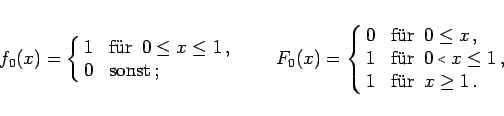

Inhalt Index DeskTop Bronstein

 Wahrscheinlichkeitsrechnung und Mathematische Statistik Mathematische Statistik Monte-Carlo-Methode Zufallszahlen
Wahrscheinlichkeitsrechnung und Mathematische Statistik Mathematische Statistik Monte-Carlo-Methode Zufallszahlen


|  | (16.171) |
berechnet. Dabei ist z0 eine beliebige positive Zahl; c und m sind ebenfalls ganze positive Zahlen, die geeignet zu wählen sind. Für zi+1 ist die kleinste nicht negative ganze Zahl zu nehmen, die der Kongruenz (16.173) genügt. Die Zahlen zi/m liegen zwischen 0 und 1 und können als gleichverteilte Zufallszahlen dienen.